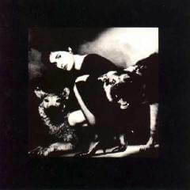

Enya (1987)
Enya is the first album by Enya, released in 1987. It features music written and recorded for the soundtrack of the 1986 documentary television series by BBC, The Celts. It was reissued and remastered in 1992 as The Celts.
Recorded in 1986, it was not released until 1987, when the series was first broadcast. The album was first released in the UK by the BBC on their own label, and later issued in North America by Atlantic Records.
Two versions of this album were released. The original BBC Records release had a cover with a white border, as illustrated. Later reissued on Atlantic Records with a black-bordered cover. The contents of both versions are identical.
The original release was distributed by Atlantic Records. When reissued by Warner Music under the title The Celts, the original-release track entitled "Portrait" was replaced with a nearly identical (but longer and played with different instrumentation) song entitled "Portrait (Out of the Blue)". The original version Enya is no longer manufactured.
The album contains only a portion of the music Enya composed for the TV series. In 2005, a previously unreleased track from these sessions, a "Spaghetti Western Theme" done in the style of Hugo Montenegro, was released on the CD-single for "Amarantine", in memory of one of the producers of the TV series.
The Fugees sampled "Boadicea" from this album for their song "Ready or Not" on 1996's The Score. Enya had prepared to sue the group for copyright infringement because they had not asked for permission and did not give her credit. After learning that The Fugees were not gangsta rappers, Enya declined to follow through with the suit, but stickers were then placed on The Score giving Enya credit for her work.
Mario Winans also sampled "Boadicea" for the melody of the song "I Don't Wanna Know" (2004). Producer P. Diddy reportedly personally contacted Enya for permission and gave her 60 percent of the royalties. She also received name billing ("Mario Winans featuring Enya and P. Diddy") for the song, which turned out to be a hit, putting her name #2 on the "Hot R&B/Hip-Hop Singles & Tracks" chart in 2004. The song was also sampled on the answer-back song "You Should Really Know" by The Pirates featuring Shola Ama, Naila Boss & Ishani which peaked at #8 on the UK Singles Chart. "Boadicea" was also sampled by Nina Sky for their hype single "Time To Go" featuring Angie Martinez, from the mixtape presented by Cipha Sounds. Actually, they more sampled "Ready or Not", as it does feature lyrics from that song as well.
Music from the Celts soundtrack would later be reused for the soundtrack of the video production The Memory of Earth, produced by David Bickley.
The song "Boadicea" was also on the Sleepwalkers (1992) soundtrack.
Single: "I Want Tomorrow" (1987)
Lyrics, videos list and linear notes in The Celts album page.
Charts
| Year | Chart | Position |
|---|---|---|
| 1990 | Top New Age Albums (US) | 14 |
| 1992 | Official Album Chart (UK) | 10 |
Credits
Guest musicians:- I Want Tomorrow: electric guitar by Arty McGlynn
- The Sun In The Stream: uillean pipes by Liam O'Flionn
- To Go Beyond II: violin by Patrick Halling
All music composed by Enya and Published by Aigle Music.
Words for "I Want Tomorrow" and "Dan y Dwr" written by Roma Ryan; words for "The Celts", "March of the Celts", "Aldebaran" and "Deireadh an Tuath" written by Enya and Roma Ryan. Words to "St. Patrick" are traditional.
This is a selection of the music heard in the BBC-TV Series
"THE CELTS".
Enya: Vocals, Piano, Juno 60, DX7, Emulator II and Kurtzweil
Music arranged by Enya and Nicky Ryan.
Engineered by Nigel Read.
Recorded at BBC Enterprises Studio Woodlands, London, and Aigle
Studios, Dublin.
Produced by Nicky Ryan
Executive Producer: Bruce Talbot
("Aldebaran" is dedicated to Ridley Scott)
Sleeve Design and Art Direction: Mario Moscardini
Photography: Martyn J. Adleman
Re-Mastered by Sam Feldman at Atlantic Studios, NYC
"ENYA and AIGLE MUSIC would like to thank:
Julian Mitchell-Dawson
Gordon Menzies
Lance England
Those Nervous Animals
Na Casaidigh
Noel Bridgeman
Nollaig Casey
Tony McHugh
Pat Coleman
and especially Mr. lan Donald
and Opel/General Motors for their generosity and assistance.
"A Very special thanks to:
Bruce Talbot and Humphrey Walwyn
David Richardson and Tony McAuley
"It is impossible for us to include all those we would like to thank. We would, however, like to take this opportunity to express our gratitude to the staff of BBC Enterprises involved in this project for their encouragement and hospitality."